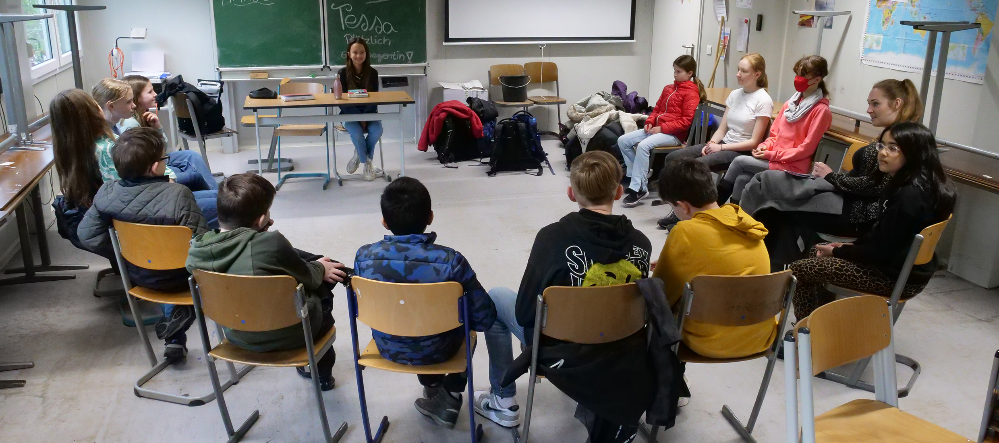

Lerncoaching ist ein Angebot für Schülerinnen und Schüler, die aktuell Schwierigkeiten beim Lernen haben. Es lässt sich am besten als Lernberatung oder Lernbegleitung beschreiben.
Dabei geht es nicht um Nachhilfe in einzelnen Fächern, sondern um die Frage: „Wie kann ich selbst besser lernen?“
Häufig entstehen Lernprobleme nicht durch fehlende Fachinhalte, sondern durch fehlende Lernstrategien oder Organisation.
Schülerinnen und Schüler lernen im Coaching, eigene Ziele zu setzen und passende Lernmethoden zu entwickeln.
Coaches unterstützen dabei durch Fragen und Reflexion, z. B.: „Wie hast du dich auf eine gute Arbeit vorbereitet?“
Ziel ist es, dass die Lernenden ihren eigenen Lernprozess besser verstehen und selbst verbessern können.
Lerncoaching ist freiwillig und funktioniert nur, wenn die Schülerinnen und Schüler selbst teilnehmen möchten.
Das Lerncoaching richtet sich vor allem an die Klassen 7 bis 9.
Schülerinnen und Schüler können sich jederzeit selbst an die Lerncoaches wenden.
Das Coachingteam besteht aus mehreren Lehrkräften, die die Schülerinnen und Schüler nicht im Fachunterricht unterrichten, um eine neutrale Beratung zu ermöglichen.
Die Coachings finden in einem speziell eingerichteten Raum im Neubau statt.
Ansprechpartner ist Herr Schmitter als Koordinator.